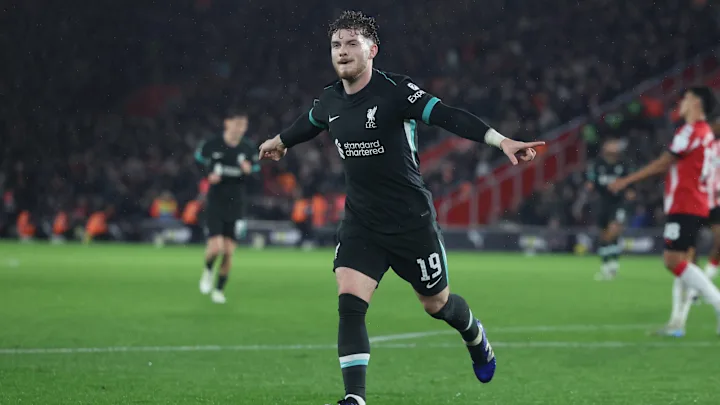

Carabao Cup Clash Craziness


Arsenal's Thrilling Comeback Seals Carabao Cup Semi-Final Spot
Arsenal staged a dramatic comeback to defeat Crystal Palace 3-2 in the Carabao Cup quarter-finals on December 18, 2024, at the Emirates Stadium. A hat-trick from Gabriel Jesus was the highlight of a pulsating night of football that saw the Gunners overcome a sluggish first-half performance to claim victory. Crystal Palace stunned the home crowd with an early opener in the 4th minute. Jean-Philippe Mateta capitalized on a defensive error to fire the visitors into the lead, leaving Arsenal on the back foot. Palace’s compact defense and counter-attacking strategy continued to frustrate Arsenal for much of the first half. However, the second half saw a rejuvenated Arsenal. Gabriel Jesus struck the equalizer in the 52nd minute with a cool finish following a slick passing move. Building on their momentum, Arsenal pressed for a second, and Jesus delivered again in the 73rd minute, heading home from close range. Jesus completed his hat-trick in the 81st minute, capping a sensational individual performance. Palace pulled one back late on through Eddie Nketiah, who finished well against his former club in the 85th minute, but Arsenal held firm in the dying moments to secure their place in the semi-finals. Mikel Arteta praised his side’s resilience, singling out Jesus for his “game-changing contribution.” With this victory, Arsenal’s quest for silverware continues, as they look to add to their long history of domestic cup success.
Liverpool Edge Past Southampton in Carabao Cup Quarter-Final
Liverpool secured a 2-1 victory over Southampton on December 18, 2024, to reach the Carabao Cup semi-finals. The win saw goals from Darwin Núñez and Harvey Elliott, with Southampton’s Cameron Archer scoring a late strike for the hosts. Liverpool dominated early, with Núñez capitalizing on a defensive error to open the scoring in the 24th minute. Elliott doubled the lead in the 32nd minute with a brilliant shot from outside the box. Southampton responded in the second half, and Archer pulled one back in the 59th minute with a well-executed goal, but Liverpool held firm to secure the win. Despite late pressure from Southampton, including a controversial no-call on a foul just outside the box, Liverpool’s defense, led by goalkeeper Caoimhín Kelleher, stood strong. The win highlighted Liverpool’s squad depth, with manager Arne Slot rotating his lineup. With this victory, Liverpool advances to the Carabao Cup semi-finals, keeping their hopes of silverware alive for the season. Southampton fought valiantly but couldn’t find an equalizer. Liverpool now waits for the semi-final draw, eager for their next challenge.
Tottenham Triumph 4-3 Over Manchester United in Carabao Cup Thriller
Tottenham Hotspur secured a 4-3 win over Manchester United on December 19, 2024, in a thrilling Carabao Cup quarter-final at the Tottenham Hotspur Stadium. The victory sent Spurs through to the semi-finals. Tottenham took a commanding 3-0 lead with goals from Dominic Solanke (15'), Dejan Kulusevski (47'), and Solanke again (62'). However, United mounted a strong comeback, with Joshua Zirkzee (64') and Amad Diallo (66') pulling them within one goal. Son Heung-min restored Tottenham's two-goal advantage with a direct corner (75'), but Jonny Evans pulled one back for United in the 81st minute, making it 4-3. Despite late pressure from United, Spurs held on for the win.